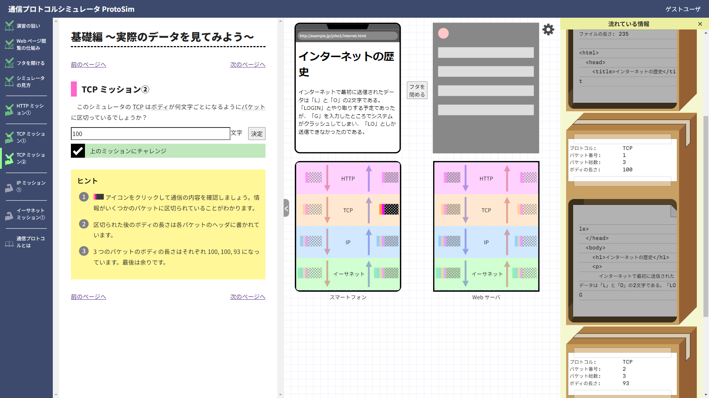

「基礎編 ～実際のデータを見てみよう～」の解説
ProtoSim（バージョン 1）サポート終了について
ProtoSim（バージョン 1）は 2025 年 3 月末をもってサポートを終了させていただきました。記録のため本ページは残しておりますが、今後は ProtoSim（バージョン 2）をご参照ください。
基本情報
- 学習者観 座学や教科書等で情報通信ネットワーク仕組みをひととおり学んだものの、内容が抽象的でいまいちピンときておらず、教科書を丸暗記したような説明しかできない。
- 学習目標 通信プロトコルとは何か、具体例を交えて自分の言葉で説明できる。
- 学習内容 通信プロトコル群の各層で実際に流れているデータを観察し、各プロトコルが具体的にどのような働きを担っているのか (どのような約束事を守っているのか) 理解する。
- 学習時間 目安 40 分。取り上げるページを限定すればより短時間での演習も可能。
各ページの解説
各ページがどのような意図で設計されているかを解説します。
演習の狙い
演習の狙い (学習目標) は、シミュレータで実際にやり取りされている情報を観察する活動を通じて、情報通信ネットワークの仕組みへのイメージを具体化することです。このページでは、演習の狙いを学習者と共有してください。
Web ページ閲覧の仕組み
ProtoSim では、Web ページ閲覧という学習者にとって身近な場面を扱っています。このページでは、まずフタを閉じた初期状態で URL を入力し、Web ページが表示される様子を見てみることで、学習者の既存の経験と結び付けて自分事として捉えてもらいます。
リクエストとレスポンス、クライアント・サーバ方式などについて軽く説明する必要があるかもしれません。その場合は、専門用語にマウスカーソルを載せたときに表示される用語解説が便利です。
Web ブラウザへの URL 入力操作は、この後も学習者が自分で行う必要があるため、教員機で操作を実演するなどして、学習者全員が確実に操作を体験できるようにしてください。
フタを開ける
前のページでは、ProtoSim が身近な場面を扱っているという前振りをしました。今度はフタを開けて URL を入力してみると、学習者にとって見慣れない表示がなされます。よく使っている Web も、実は中の仕組みをよく知らないことに気づいてもらい、学習の動機づけを行います。
URL を入力するとフタを外した状態ではアニメーションが流れます。学習者にとっては最初は見方がわからないことが想定されるため、「まずはスマートフォンでリクエストのデータが上の層から下の層へと移動して、次にそのデータが Web サーバで下の層から上の層へと取り出されて、・・・」などと口頭でも説明してください。
操作をすることが目的になってしまって、操作の結果を解釈しなくなってしまうと演習の意味が大きく損なわれてしまうので、操作結果と意味を結びつけるようにしてください。
シミュレータの見方
このページでは、シミュレータの見方を紹介しています。各教科書に記載されている図とは、リクエストとレスポンスが両方載っている点など、少し違う箇所がありますので、そのギャップを埋めるのがこのページの目的です。
また、データが流れる順番にアイコンをクリックしていって、「上の層のデータが箱の中に入れられている」「最終的には 0 と 1 のデータになっている」「それが相手側では逆の順番で元に戻されている」といった説明をすることも考えられます。
アイコンをクリックして流れている情報を観察する操作も、この後学習者が自分で行う必要があるため、教員機で操作を実演するなどして、学習者全員が確実に操作を体験できるようにしてください。
なお、冒頭からここまでの全体的な説明で、10 分程度かかると想定しています。
HTTP ミッション ①
HTTP の役割の 1 つは、サーバに伝えたい情報 (Web ページのデータをもらうのに必要な情報) をキーバリュー形式 (項目名: 内容 のような形式) で整理することです。
このミッションでは、そのキーバリュー形式を読み取り、そこに約束事が存在していることを理解します。HTTP に流れているリクエストのデータを見ると、ファイル という欄が見つかるので、そこに書かれている /joho1/internet.html をコピペしてして決定ボタンを押すと正解になります。この文字列は「joho1 フォルダ内の internet.html ファイル」という意味です。
問題を読んだり操作して解答したりするのは各学習者に任せ、学習者の主体的な学びや試行錯誤をぜひ促してください。その後ペアワークや教員の解説などで、答えとそこに至るまでの操作を確認してください。
追加で次のような問いかけを行うことも考えられます。
- 「HTTP で流れている情報と URL にはどんな関係があるか？」
- URL の構造の復習になります。
- 「HTTP のリクエストにある
言語の欄を英語に書き変えるとどうなりそうか？ 欄を消すとどうなりそうか？」英語に変えると英語のページが返ってきそうです。欄を消すとサーバのデフォルトの言語 (たぶん英語) のページが返ってきそうです。- ただし、同じ名前で日本語と英語の 2 種類のファイルが保存されているのか？ という新たな疑問が生じるかもしれません。
- 約束事を守ってサーバに情報を伝えることで、情報が適切に伝わり、サーバの機能を活用できます。約束事を守らないと、情報が適切に伝わらずおかしな結果になることもあります。
HTTP のミッションの読解から解説までで、10 分程度かかると想定しています。
TCP ミッション ①
TCP の役割の 1 つは、情報をパケットに分割することです。パケット交換方式では回線交換方式と比べて、回線を細かく交互に使用できるという利点があります。また、送信途中でエラーが発生した際の再送で、小さなパケット 1 個だけ再送すれば済むという利点もあります。
このミッションでは、シミュレータ内で実際に情報がパケットに分割されていることを確認します。TCP で流れているレスポンスのデータを見て、スクロールすると 3 個のパケットが存在することがわかります。これが正解です。
TCP ミッション ②
このミッションでは、パケットへの分割のために、厳格な約束事が決められていることを確認します。前のミッションで 3 個のパケットを観察しますが、そのヘッダに書かれている ボディの長さ は、100, 100, 93 となっていることがわかります。最後は余りなので、100 文字ごとに区切るという約束事があることが推測できます（空白や改行も 1 文字として数えます）。
ミッションの答え合わせでは、学習者に発表してもらう (教員機で操作してもらい、表示される内容のどこを読み取って答えを導き出したのか説明してもらう) といった活動も考えられます。

追加で次のような問いかけを行うことも考えられます。
- 「100 文字ごとに区切るというルールを破って、150 文字ごとに区切るコンピュータがいたらどんな困りごとが起こり得るか？」
- 後ろの 50 文字を読み落として情報が正しく伝わらない、回線の公平性が損なわれる、といった問題が起こり得ます。
- プロトコルをみんなが守ることの重要性がわかります。
- 「パケットに分割して運びやすくすると書かれているが、どうして情報を細かく区切ると運びやすくなるのか？」
- TCP の役割を本質的に聞いています。
- 直観的には、家具の配送を想像すると、大きな家具をそのまま配送するのと、組み立て式家具をバラバラに配送するのとでは負担が異なります。
TCP のミッション 2 題の読解から解説までで、10 分程度かかると想定しています。
Note
ProtoSim ではわかりやすさのため、文字のみを扱い文字数でパケットに分割しています。実際の TCP では動画データなども扱うため、文字数ではなくバイト単位でパケットに分割されます。
IP ミッション ①
IP の主な役割はルーティングですが、ProtoSim では IP アドレスがデバイスの区別に使われているということが確認できます。
このミッションでは、送信元と受信先がスマートフォンと Web サーバのどちらなのか間違えないようにする必要があります。見ている情報がリクエストなのかレスポンスなのかにもよってどちらがどちらなのか変わります。正解は 203.0.113.128 の方です。
イーサネット ミッション ①
これまで伝えたい情報を文字列の形で扱ってきましたが、最終的には 0 と 1 の列になり、ケーブルでは電圧の高低で伝わっていきます。
このミッションでは、イーサネットで流れているデータを観察します。波形が上に振れている方に 1 の数字が振られているので、答えは 1 です。
追加で次のような問いかけを行うことも考えられます。
- 「どんな仕組みで文字列を 0 と 1 の列に変換しているのか？」
- 情報のデジタル化の単元で既習の文字コードの復習に繋げられます。
- 画像や音声にも触れれば、標本化・量子化・符号化といった件の復習にも繋げられます。
IP とイーサネットのミッションの読解から解説までで、合わせて 10 分程度かかると想定しています。
通信プロトコルとは
最後に、これまで出てきたさまざまな「約束事」を振り返り、通信プロトコルへのイメージを具体化します。
授業全体の振り返りとして、「通信プロトコルとは」を自由記述で説明させてみることも考えられます。